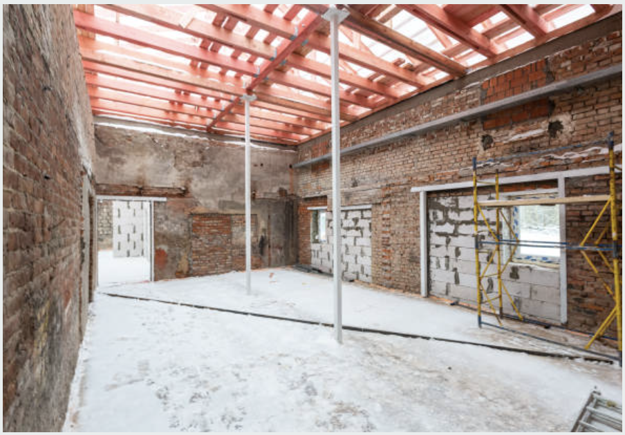
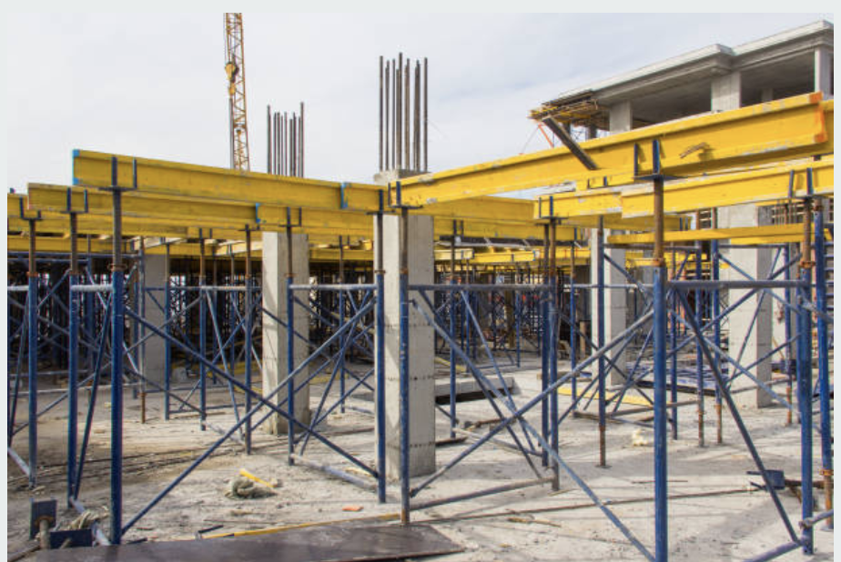
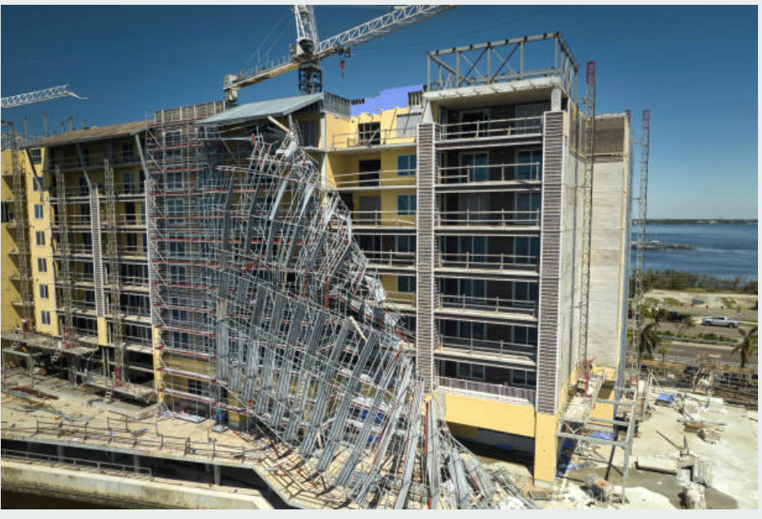
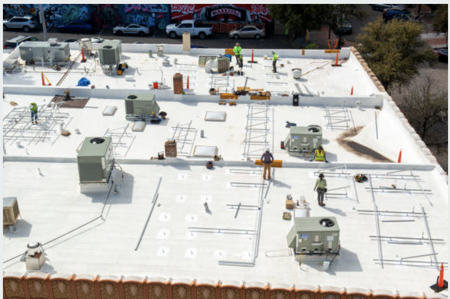

Structural Engineering Help Center — New York City
Guides, how-tos, and answers for every phase of structural engineering in NYC — from DOB permit filings and Local Law inspections to facade and envelope consulting, repair strategy, historic renovation, garage inspections, specialty systems, forensic investigations, and construction administration.
Getting Started
How to engage a structural engineer, what to expect, licensing requirements, and how we work on NYC projects.
- PE licensing and seal expectations
- Scope, fees, and first-step planning
DOB Permits & Filings
Alt-1, Alt-2, Alt-3, NB applications, Pro-Cert filings, plan review, objections, and permit timelines.
- Application strategy and filing path
- Review cycles, objections, and approvals
Local Law Inspections
LL11/FISP facade inspections, Local Law 126 parking structure reviews, LL97 coordination, and inspection cycles.
- Facade cycles and garage compliance
- Reports, condition classifications, and corrective-action steps

5 guidesFoundations & Site Work
Underpinning, shoring and support of excavation, pre-construction surveys, and geotechnical requirements.
- SOE strategy and neighboring property risk
- Monitoring, surveys, and soil coordination

5 guidesTemporary Works
Formwork engineering, erection plans, cofferdams, demolition plans, construction sequencing, and monitoring.
- Shoring, staging, and protection design
- High-risk temporary condition planning
Special Inspections
TR1 filings, SIA requirements, inspection types, non-conformances, tested assemblies, and QA process.
- Required inspections by scope and material
- Documentation, signoff, and closeout

5 guidesForensic Engineering
Failure investigations, storm damage assessments, construction defect documentation, and insurance claims.
- Cause-and-origin evaluation
- Damage documentation and remediation basis
Expert Witness
Expert reports, CPLR rules, deposition preparation, litigation support, and subrogation claims.
- Reports, exhibits, and testimony prep
- Construction dispute and claim support
Building Systems & Materials
Envelope systems, glazing, masonry, below-grade waterproofing, cold-formed framing, and specialty structures.
- Material behavior and assembly detailing
- Facade, waterproofing, and system interfaces

8 guidesRepair, Restoration & Reports
Anchorage, timber repair, historic renovation, coatings, parking garage work, retrofit systems, and compliance documentation.
- Repair sequencing and rehabilitation scope
- Reports, signoff, and preservation planning
Getting Started
What does a structural engineer do in NYC?
How PEs design and evaluate structures, file with DOB, and provide inspection services in New York.
PE licensing requirements in New York State
NYSED licensure, PE seal requirements, and why you must confirm your engineer is NY-licensed.
Structural engineering costs in NYC
Fee ranges for residential letters, DOB-filed drawings, full structural design, FISP inspections, and expert witness services.
How to engage Asvakas Engineering
Send us your project description and timeline — we provide fee proposals within 1–2 business days.
Structural Engineering Services Overview
Complete guide to the structural engineering services Asvakas provides in NYC and the broader tristate area.
DOB Permits & Filings
Alt-1, Alt-2, and Alt-3 — which applies to your project?
How NYC DOB classifies alterations and what each filing type requires from the structural engineer.
NB (New Building) application process
Required documents, Pro-Cert vs. standard review, and what to expect during DOB review.
How long does NYC DOB plan review take?
What affects DOB review duration for Alt-1, Alt-2, NB, and Pro-Cert filings — and how to reduce extra review cycles.
How to legalize unpermitted structural work in NYC
The after-the-fact filing process, what DOB requires, and what to do if the work doesn't conform to code.
Structural requirements for a change of occupancy
What code analysis is required when a building changes use classification under the NYC Building Code.
Certificate of Occupancy vs. Temporary CO in NYC
When a TCO is issued, how to convert to permanent CO, and what engineering sign-offs are required.
Local Law Inspections
Local Law 11 / FISP Façade Inspection Guide
FISP cycle structure, QEWI requirements, SAFE/SWARMP/UNSAFE classifications, corrective-action process, and TR8 filings.
What a FISP/LL11 inspection covers
Exterior wall elements inspected, access methods, balcony assessment, and how the technical report is filed.
NYC balcony inspection and defect guide
Common balcony defects triggering Unsafe notices, sidewalk shed requirements, and remediation process.
Local Law 126 — Parking Structure Inspection Program
PSIP requirements, QPSI inspections, Unsafe and Critical classifications, and current filing requirements.
Local Law 97 — Carbon limits and structural engineering
How LL97 compliance upgrades affect rooftop structural systems — solar, HVAC, and cladding changes.
Foundations & Site Work
NYC shoring and support of excavation guide
When PE-designed SOE is required, common shoring types, DOB filing requirements, and special inspections.
Underpinning guide for NYC buildings
When underpinning is required, neighbor excavation obligations, design types, and DOB filing process.
Pre-construction surveys for NYC construction sites
What the survey documents, when it is required, and how it protects against false damage claims.
Geotechnical investigations for NYC new construction
When a soil boring report is required, how it informs foundation design, and key soil parameters.
Neighbor's excavation damaging your foundation
NYC Building Code obligations on excavating parties, risk documentation, and how to record adjacent-property damage.
Temporary Works
Shoring system design and engineering
Soldier piles, sheet piles, secant pile walls, rakers, tiebacks — design principles and NYC requirements.
Formwork and falsework engineering in NYC
When PE-stamped falsework designs are required, fresh concrete pressure calculations, and pre-pour inspection.
Steel and precast erection plan requirements
When OSHA and DOB require erection plans, what they must contain, and temporary bracing design.
Temporary works engineering overview
Comprehensive guide to all temporary works categories — from shoring and formwork to cofferdams and erection.
Construction monitoring programs in NYC
When DOB requires monitoring, instrumentation types, trigger thresholds, and engineer review obligations.
Special Inspections
NYC TR1 form — what it is and how it works
Special inspection statement requirements, SIA approval, inspection types listed, and sign-off process.
What is a Special Inspection Agency and who pays?
SIA DOB approval, common inspection types, cost, and the owner's responsibility for the SIA budget.
What happens when a special inspection finds a deficiency?
SIA notification process, engineer evaluation, remediation options, and DOB reporting requirements.
Construction administration vs. special inspections — what's the difference?
How the engineer of record's CA role differs from the SIA's special inspection role and why both are needed.
Forensic Engineering
Forensic structural investigation guide
How a forensic investigation is conducted, documentation methods, materials testing, and report preparation.
Structural failure analysis in NYC
Common failure modes, root cause analysis methodology, and structural repair recommendations.
Structural engineering support for insurance claims
What a structural engineer does for property insurance claims — assessment, causation analysis, repair scopes.
What to do after storm or flood structural damage
When to call a structural engineer, what to document, and how to preserve the evidentiary record.
Construction defects under New York law
What constitutes a structural construction defect, limitation periods, and the engineer's role in defect claims.
Expert Witness Services
Expert witness structural engineering guide
How expert engineers work in litigation — report requirements, CPLR rules, depositions, and trial testimony.
CPLR expert witness requirements in New York
New York's standards for expert testimony, disclosure requirements, and gatekeeping for structural engineers.
Subrogation claims involving structural damage
How insurers pursue recovery for structural damage and the critical role of the engineering expert report.
How to retain Asvakas Engineering as an expert witness
Contact us with case details — jurisdiction, issues in dispute, and expert services needed. We respond within 24 hours for litigation matters.
Building Systems & Materials
Building envelope consulting guide
How air, water, vapor, movement, and enclosure transitions are reviewed across new work and repairs.
Structural glass and glazing systems guide
Support conditions, movement allowance, leakage risk, and how glazing interfaces with facade framing.
Underground waterproofing and below-grade systems
Leak investigation, buried transitions, concrete durability, and why concealed conditions need focused review.
Masonry and stone consulting guide
Cracking, repointing, moisture, salt exposure, and material compatibility in stone and masonry repair planning.
Lightweight steel and cold-formed systems guide
Bracing, fastener patterns, corrosion exposure, and coordination with cladding and support assemblies.
Greenhouse structure engineering guide
Framing, glazing, condensation, corrosion, and anchorage issues in controlled-environment structures.
Repair, Restoration & Reports
Anchorage and fastening design guide
Substrate capacity, edge conditions, embedment, retrofit constraints, and construction-phase coordination.
Timber and wood engineering guide
Existing wood repair, framing review, deck structures, and when partial repair is better than replacement.
Code compliance and engineering reports guide
What technical letters, condition reports, compliance narratives, and due diligence documentation should include.
Composite materials and retrofit systems guide
Where composite strengthening fits, how substrate quality matters, and when broader rehabilitation is needed.
Historic restoration and preservation guide
Restoration planning for older buildings, repair compatibility, facade safety, and preservation-sensitive interventions.
Concrete repair materials and surface preparation
Repair mortars, bond conditions, corrosion mitigation, and why preparation drives long-term performance.
Protective coatings for structural steel
How coating systems should be considered alongside corrosion exposure, field touch-up, and maintenance planning.
Parking garage inspection and repair planning
How garage inspections, durability findings, repair prioritization, and public-safety coordination fit together.